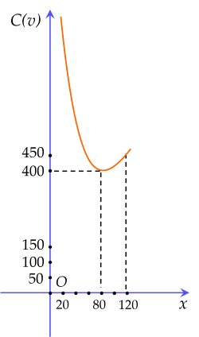
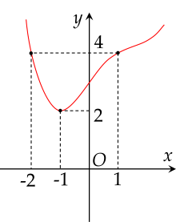

Câu 9. Hình họcKhông vẽ hình
Phần I — Trắc nghiệm chọn một phương án
0,25 điểm
Trong không gian $Oxyz$ , gọi $M'$ là hình chiếu vuông góc của điểm $M\left(2;\,3;\,-1 \right)$ trên trục $Oy$ thì tọa độ $\overrightarrow{MM'}$ là
Câu 17. Đại số
Phần 6 — Trắc nghiệm trả lời ngắn
0,5 điểm
Một công ti trung bình bán được $600$ chiếc máy lọc không khí mỗi tháng với giá $10$ triệu đồng một chiếc. Một khảo sát cho thấy nếu giảm giá bán mỗi chiếc $400$ nghìn đồng, thì số lượng bán ra tăng thêm khoảng $60$ chiếc mỗi tháng. Gọi $p$ (triệu đồng) là giá của mỗi máy, $x$ là số máy bán ra. Khi đó, hàm cầu là $p=p(x)$ và hàm doanh thu là $R(x)=px$ . Hỏi công ti phải bán mỗi chiếc với số tiền bao nhiêu triệu đồng để doanh thu là lớn nhất?
Trả lời ngắn — gõ kết quả, kèm đơn vị nếu đề hỏi đơn vị.
Câu 18. Đại số
Phần 6 — Trắc nghiệm trả lời ngắn
0,5 điểm
Giả sử chi phí tiền xăng $C$ (đồng) phụ thuộc tốc độ trung bình $v$ (km/h) theo công thức:
$C(v)=\dfrac{16\,000}{v}+\dfrac{5}{2}v$ $(0\lt v≤ 120)$
Để biểu diễn trực quan sự thay đổi của $C(v)$ theo $v$ , người ta đã vẽ đồ thị hàm số $C(v)$ như hình bên.

Tài xế xe tải lái xe với tốc độ trung bình là bao nhiêu để tiết kiệm tiền xăng nhất?
Trả lời ngắn — gõ kết quả, kèm đơn vị nếu đề hỏi đơn vị.
Câu 19. Hình họcKhông vẽ hình
Phần 6 — Trắc nghiệm trả lời ngắn
0,5 điểm
Trạm kiểm soát không lưu đang theo dõi hai máy bay. Giả sử trong không gian với hệ trục tọa độ $Oxyz$ , đơn vị đo lấy theo ki-lô-mét, tại cùng một thời điểm theo dõi ban đầu: máy bay thứ nhất ở tọa độ $A(0;35;10)$ , bay theo hướng vectơ $\overrightarrow{u_1} = (3;4;0)$ , với tốc độ không đổi $900$ km/h và máy bay thứ hai ở tọa độ $B(31;10;11)$ , bay theo hướng $\overrightarrow{u_2} = (5;12;0)$ với tốc độ không đổi $910$ (km/h). Biết khoảng cách an toàn tối thiểu giữa hai máy bay là $5$ hải lý (khoảng $9,3$ km). Nếu hai máy bay tiếp tục di chuyển với tốc độ bay như trên thì sau ít nhất bao nhiêu phút (kể từ thời điểm theo dõi ban đầu), hai máy bay vi phạm khoảng cách an toàn (kết quả làm tròn đến hàng phần trăm)?
Trả lời : ☐
Điền số — gõ kết quả em tính được vào ô.
Câu 20. Đại số
Phần 6 — Trắc nghiệm trả lời ngắn
0,5 điểm
Một bể chứa $2$ m $^3$ nước tinh khiết. Người ta bơm vào bể đó nước muối có nồng độ không đổi với tốc độ $20$ lít/phút. Biết rằng nồng độ muối trong bể sau $t$ phút (tính bằng tỉ số của khối lượng muối trong bể và thể tích nước trong bể, đơn vị: gam/lít) là một hàm số $f(t )$ , thời gian $t$ tính bằng phút. Biết rằng tiệm cận ngang của đồ thị hàm số $y = f(t)$ là $y=10$ . Tính nồng độ muối trong bể sau khi bơm được $1$ giờ. (làm tròn kết quả đến hàng phần trăm, đơn vị gam/lít)
Trả lời ngắn — gõ kết quả, kèm đơn vị nếu đề hỏi đơn vị.
Câu 21. Đại số
Phần 6 — Trắc nghiệm trả lời ngắn
0,5 điểm
Cho hàm số $y=f(x)=ax^5+bx^4+cx^3+dx^2+ex+f, \, (a≠ 0)$ và hàm số $y=f'(x)$ có đồ thị như hình vẽ:

Đặt $g(x)=f(3x-1)-9x^3+\dfrac{9}{2} x^2 - 6x+2\,022$ . Hàm số $y = g( | x | )$ có bao nhiêu điểm cực trị?
Trả lời ngắn — gõ kết quả, kèm đơn vị nếu đề hỏi đơn vị.
Câu 22. Đại số
Phần 6 — Trắc nghiệm trả lời ngắn
0,5 điểm
Hàm số $y=(x+m)^3+(x+n)^3-x^3$ đồng biến trên khoảng $(-∞ ;\,+∞)$ . Giá trị nhỏ nhất của biểu thức $P=100[4(m^2+n^2)-m-n]$ bằng bao nhiêu? ( Làm tròn kết quả đến chữ số thập phân thứ nhất )
Trả lời ngắn — gõ kết quả, kèm đơn vị nếu đề hỏi đơn vị.